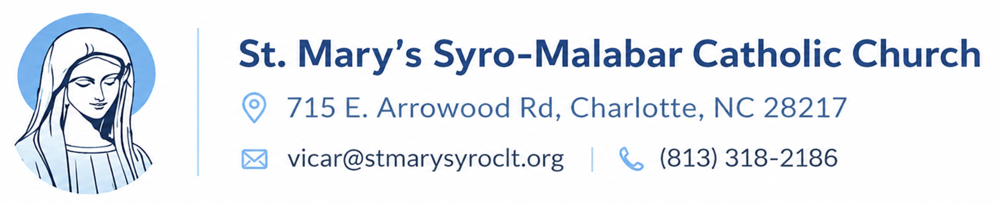

<header class="site-header">
  <a class="site-brand" data-href="index.html" href="index.html" aria-label="St. Mary's Syro-Malabar Catholic Church home">
    
  </a>

  <input class="menu-checkbox" type="checkbox" id="menu-toggle" aria-label="Open navigation menu">
  <label class="menu-button" for="menu-toggle">
    <span></span>
    <span></span>
    <span></span>
  </label>

  <nav class="site-nav" aria-label="Main navigation">
    <a data-page="home" data-href="index.html" href="index.html">Home</a>

    <details class="nav-dropdown">
      <summary>About</summary>
      <div class="dropdown-menu">
        <a data-page="parish-history" data-section="about" data-href="about/parish-history.html" href="about/parish-history.html">Parish History</a>
        <a data-page="diocese-history" data-section="about" data-href="about/diocese-history.html" href="about/diocese-history.html">Diocese History</a>
        <a data-page="syro-malabar-church" data-section="about" data-href="about/syro-malabar-church.html" href="about/syro-malabar-church.html">Syro-Malabar Church</a>
        <a data-page="our-parish-vicar" data-section="about" data-href="about/our-parish-vicar.html" href="about/our-parish-vicar.html">Our Parish Vicar</a>
      </div>
    </details>

    <a data-page="mass-times" data-href="mass-times.html" href="mass-times.html">Mass Times</a>
    <a data-page="ministries" data-href="ministries.html" href="ministries.html">Ministries</a>
    <a data-page="contact" data-href="contact.html" href="contact.html">Contact</a>
    <a class="nav-button" data-page="contact" data-href="contact.html" href="contact.html">Visit Us</a>
  </nav>
</header>
